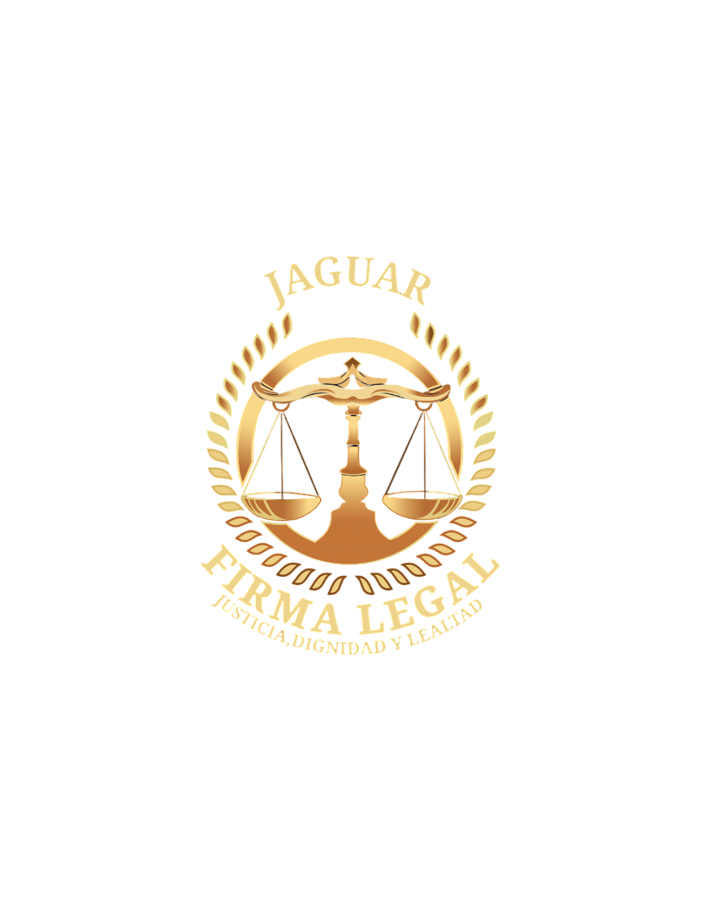

Firma Legal Jaguar
Justicia, Dignidad y Lealtad



Justicia, Dignidad y Lealtad
Firma Legal Jaguar Es una una Firma Legal comprometida con el ejercicio de la acción privada, en defensa de los derechos legítimos de nuestros clientes, con una metodología de estudio de caso que nos permite evaluar a detalle todos los aspectos internos y externos del caso, obteniendo como resultado una estrategia técnica de abordaje específica. Esto nos permite informar al cliente de manera oportuna de la condición en que se encuentra su situación legal, los caminos procesales a seguir y los posibles alcances y salidas legales. Nuestros enfoques, DERECHO, SOCIEDAD Y AMBIENTE Con alianzas estratégicas con especialistas en diferentes áreas tanto a lo interno del derecho como de ciencias auxiliares el abordaje es integral dando así resultados revestido de absoluta legalidad y seguridad jurídica.
Representar de forma eficaz y eficiente a nuestros clientes, brindándoles salidas procesales éticas, justas, apegadas a derecho y con seguridad jurídica.
Ser la Firma Legal referente tanto a nivel nacional como regional, con aportes significativos en el estudio de casos, solución de conflictos, generación de ciencia con investigaciones científicas en materia jurídica, ambiental y social.